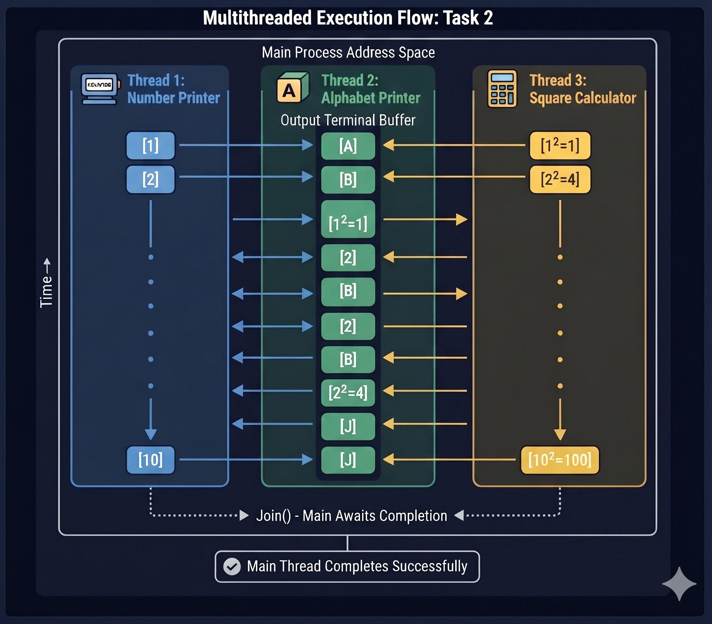

MCA (FY) - AIDS
Next Generation Operating Systems
Next Generation Operating Systems
Assignment — CPU Scheduling, Multithreading, Linux Command Shell & Deadlock Analysis
Student Name
Makwana Tusharbhai Shantibhai
URN Number
E26M02F2221
Program & Class
MCA(FY) - AIDS
Faculty In-Charge
Indu Kumari
Institution
School of Engineering, ADYPU Pune
Task 1: CPU Scheduling Algorithms
Problem Given Processes & Scheduling Parameters
Given 4 processes with Arrival Time (AT), Burst Time (BT), and Priority ratings. Priority Rule: Lower integer = Higher priority (P2 > P4 > P1 > P3).
| Process | Arrival Time (AT) | Burst Time (BT) | Priority Ranking | Execution Priority Status |
|---|---|---|---|---|
| P1 | 0 ms | 8 ms | 3 | Priority 3 (Medium) |
| P2 | 1 ms | 4 ms | 1 | Priority 1 (Highest) |
| P3 | 2 ms | 9 ms | 4 | Priority 4 (Lowest) |
| P4 | 3 ms | 5 ms | 2 | Priority 2 (High) |
0:00 / 0:00
Task 2: Multithreading Implementation

Figure: Multi-threaded execution model showing 3 concurrent threads in a shared process space.
Task 2 Architecture
Task Three Concurrent Threads in Python (Point-to-Point Summary)
- •Thread 1 (Numbers): Prints numbers
1to10sequentially. - •Thread 2 (Alphabets): Prints letters
'A'through'J'sequentially. - •Thread 3 (Squares): Prints squares of numbers from 1 to 10 ($1^2=1, 2^2=4, \dots, 10^2=100$).
- •Address Space: All 3 threads share the single process memory space and stdout terminal buffer.
- •Synchronization:
start()launches threads;join()awaits completion before main process terminates.
multithread_demo.py (Easy Python Format)
import threading
import time
def print_numbers():
for i in range(1, 11):
print(f"[Thread-1] Number: {i}")
time.sleep(0.01)
def print_alphabets():
for ch in "ABCDEFGHIJ":
print(f"[Thread-2] Alphabet: {ch}")
time.sleep(0.01)
def print_squares():
for i in range(1, 11):
print(f"[Thread-3] Square: {i}² = {i*i}")
time.sleep(0.01)
# 1. Create 3 concurrent worker threads
t1 = threading.Thread(target=print_numbers)
t2 = threading.Thread(target=print_alphabets)
t3 = threading.Thread(target=print_squares)
# 2. Launch all threads simultaneously
t1.start()
t2.start()
t3.start()
# 3. Main awaits all thread completion
t1.join()
t2.join()
t3.join()
print("[Main] All concurrent threads executed successfully.")
Terminal Execution Output
Ready
$ python multithread_demo.py
# Click "▶ Run Code" below to execute and see animated thread interleaving.
Live Thread Simulation
Section A: Operating System Fundamentals
Drag / Move Mouse to Orbit 3D OS Rings
Point-to-point conceptual summary. Scroll slowly to reveal each question module smoothly:
Q1 What is an Operating System? Explain any four functions.
- •Definition: System software acting as an intermediary between computer hardware and user application software.
- •1. Process Management: Allocates CPU time slices, handles thread creation, dispatching, synchronization, and termination.
- •2. Memory Management: Allocates/deallocates RAM addresses, tracks memory map tables, and coordinates virtual memory demand paging.
- •3. File System Management: Manages directories, files, access inodes, permissions (read/write/execute), and block disk allocation.
- •4. Device (I/O) Management: Interfaces with hardware peripherals via device drivers, coordinating interrupts, buffers, and DMA channels.
Q2 Differentiate between Main Memory and Virtual Memory.
| Parameter | Main Memory (RAM) | Virtual Memory |
|---|---|---|
| Nature | Physical semiconductor hardware on motherboard | Logical memory management abstraction using disk |
| Access Speed | Nanosecond ultra-fast direct CPU bus access | Slower (incurs disk I/O latency upon page faults) |
| Capacity | Strictly bounded by physical RAM modules | Extends address space beyond physical limit via disk |
| Management | Directly indexed by CPU and OS kernel | Managed jointly by OS kernel & CPU Memory Management Unit (MMU) |
Q3 What is the difference between a Process and a Program?
| Parameter | Program | Process |
|---|---|---|
| Definition | Passive set of instructions stored on disk | Active instance of a program in execution |
| Resource Cost | Consumes secondary storage space only | Consumes CPU cycles, registers, stack, heap & RAM |
| Execution State | Static binary file (no runtime state) | Dynamic states: Ready, Running, Waiting, Terminated |
| Multiplicity | Single persistent executable file | One program can spawn multiple distinct concurrent processes |
Q4 What is Deadlock? List its four necessary conditions.
Definition: A permanent stalled state where two or more processes wait indefinitely for resources held by each other.
- •1. Mutual Exclusion: At least one resource is held in non-shareable mode (only one process at a time).
- •2. Hold and Wait: A process holds resources while requesting additional resources currently held by others.
- •3. No Preemption: Resources cannot be forcibly seized; only released voluntarily upon task completion.
- •4. Circular Wait: A closed chain of processes exists such that each process waits for a resource held by the next.
Q5 Differentiate between Paging and Swapping.
| Parameter | Paging | Swapping |
|---|---|---|
| Unit of Transfer | Fixed-size memory blocks called Pages (typically 4 KB) | Entire process memory image (all pages & data) |
| Fragmentation | Completely eliminates external memory fragmentation | Can cause external fragmentation in swap space |
| Overhead | Fine-grained, low-latency transfer on page fault | Coarse-grained, high disk read/write bandwidth cost |
| Primary Goal | Provides non-contiguous virtual address translation | Frees large blocks of physical RAM under memory pressure |
Section B: Linux Commands and File Management
Active Command (1/12)
Core Command
# Command Syntax & Usage:
$ pwd
# Description:
Prints the current working directory path from root.
Terminal Output
Ready
student@adypu-linux:~$ pwd
/home/student
Exit Code 0
Q6 Point-to-Point Summary of Core File Operations
| Operation Required | Linux Command | Point-to-Point Syntax & Action |
|---|---|---|
| Display current working directory | pwd | Prints absolute path of current working directory |
| List files and directories | ls -l | Displays entries with permissions, size, timestamps |
Create empty file student.txt | touch student.txt | Updates timestamp or generates zero-byte file |
Create directory BCA | mkdir BCA | Allocates new directory inode in current path |
| Display contents of file | cat student.txt | Concatenates and streams file contents to STDOUT |
Q7 Explanation of cd, cp, mv, rm, and wc
- •cd (Change Directory): Modifies active working directory path. Example:
cd /home/student/BCA - •cp (Copy): Duplicates file or directory contents to target path. Example:
cp student.txt backup.txt - •mv (Move / Rename): Relocates or renames file without duplicating data blocks. Example:
mv student.txt details.txt - •rm (Remove): Unlinks file inode from directory tree permanently. Example:
rm -f old_temp.txt - •wc (Word Count): Tallies newline count (
-l), words (-w), and bytes (-c). Example:wc -l student.txt
Q8 Difference between find and grep
| Feature | find Command | grep Command |
|---|---|---|
| Primary Objective | Searches filesystem directory trees for files | Searches inside file contents for text patterns |
| Search Criteria | File names, types, sizes, permissions, mod times | Regex strings, word patterns, case-insensitive flags |
| Target Scope | Directory tree root path (e.g., /home/student) | Individual file stream, files, or stdin pipes |
| Command Example | find . -type f -name "student.txt" | grep -n "MCA" student.txt |
Section C: Linux Practical Questions
Q9 Create and Display Student Details File (student.txt)
- •Nano Authoring:
nano student.txt→ Write record → Ctrl+O → Ctrl+X. - •Display Verification: Execute
cat student.txtto stream profile record to terminal.
student.txt Creation Script
# Step 1: Create file in Nano
$ nano student.txt
# Step 2: Content written to student.txt
==================================================
STUDENT PROFILE RECORD
==================================================
Name: Makwana Tusharbhai Shantibhai
URN Number: E26M02F2221
Program: MCA(FY) - AIDS
Faculty: Indu Kumari
College: Ajeenkya DY Patil University, Pune
Academic Year: 2026 – 2027
==================================================
# Step 3: Stream and view file
$ cat student.txt
Terminal Output: cat student.txt
Ready
student@adypu-linux:~$ cat student.txt
# Click "▶ Run Code" to stream student record in animated style.
STDOUT Stream
Q10 Create State-Capital File Using Vim & Perform Search and Count
- •Vim Workflow:
vim capital.txt→ i (Insert) → Type states → Esc →:wq. - •Verification Suite:
cat capital.txt,find ~ -name 'capital.txt',grep -n 'Maharashtra',wc -l.
capital.txt Suite Script
# 1. Author 10 states in Vim
$ vim capital.txt
# 2. Search file by name in home directory
$ find ~ -name "capital.txt"
# 3. Search Maharashtra with line number (-n)
$ grep -n "Maharashtra" capital.txt
# 4. Count total lines (-l)
$ wc -l capital.txt
Terminal Output: Practical Suite
Ready
student@adypu-linux:~$ cat capital.txt && grep -n "Maharashtra" capital.txt && wc -l capital.txt
# Click "▶ Run Code" to execute complete practical sequence on site.
10 States Verification
Section D: Analytical & Scenario Questions
Q11 Explain How Deadlock May Occur and Two Prevention Methods
0:00 / 0:00
- •Deadlock Occurrence Scenario: Process P1 holds Resource R1 and requests R2; simultaneously, Process P2 holds Resource R2 and requests R1. Neither can proceed, yielding a mutual permanent standstill.
- •Method 1: Break Hold and Wait — Require processes to request and acquire all required resources simultaneously before execution. If even one resource is unavailable, none are allocated, and the process releases all held resources and waits.
- •Method 2: Break Circular Wait — Enforce a strict global numerical ordering $F(R)$ across all resources. Processes must request resources only in strictly ascending numerical order ($F(R_j) > F(R_i)$), structurally eliminating circular wait cycles.
Q13 Missing report.txt Diagnostic Investigation Workflow
- •1. Identify Active User:
whoamiverifies current shell session identity. - •2. Print Working Directory:
pwdestablishes current directory context. - •3. System-Wide Search:
find / -type f -name "report.txt" 2>/dev/nulllocates missing file. - •4. Permission Audit:
ls -l /home/student/documents/report.txtchecks read/write bits.
diagnose_missing_file.sh
#!/bin/bash
# Diagnostic Investigation Script
echo "[Step 1] Current User Identity:"
whoami
echo "[Step 2] Current Working Directory:"
pwd
echo "[Step 3] Crawling Root Filesystem:"
find / -type f -name 'report.txt' 2>/dev/null
echo "[Step 4] Inspecting Permissions & Metadata:"
ls -l /home/student/documents/report.txt
Terminal Output: Q13 Runner
Ready
student@adypu-linux:~$ ./diagnose_missing_file.sh
# Click "▶ Run Code" to execute all 4 investigation steps.
Exit Code 0
THANK YOU
Next Generation Operating Systems • Assignment
Makwana Tusharbhai Shantibhai • URN: E26M02F2221
MCA(FY) - AIDS • School of Engineering, ADYPU Pune
MCA(FY) - AIDS • School of Engineering, ADYPU Pune